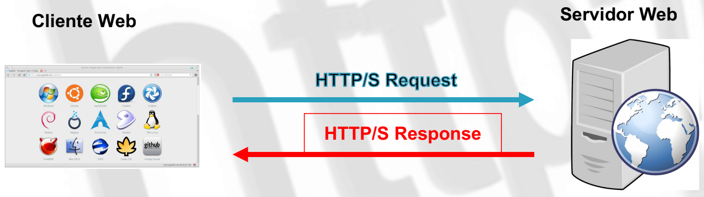
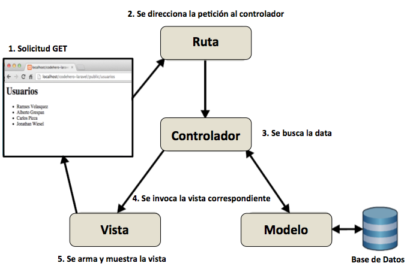
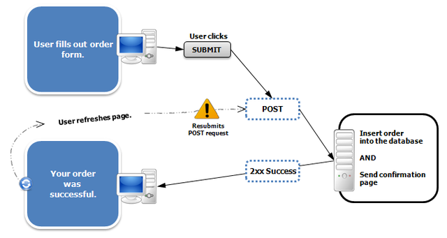
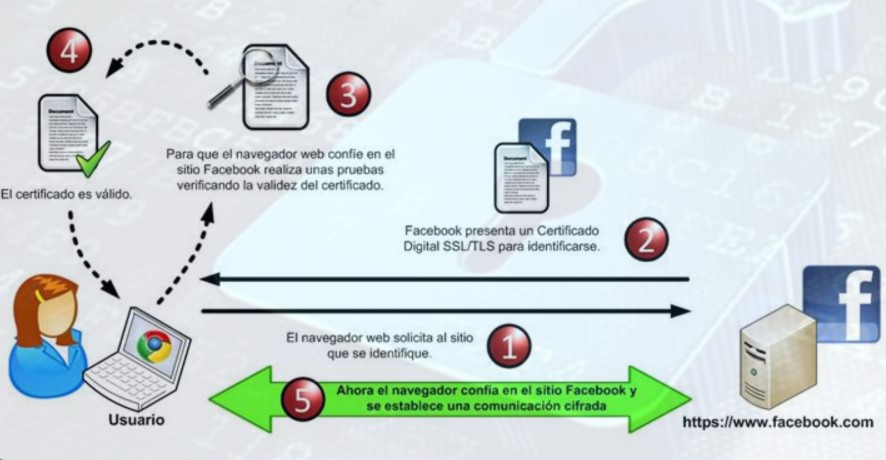

Servicio Web HTTP
¿Cómo Funciona?

- CLIENTE
- Solicita e interpreta el contenido.
- Renderiza en la pantalla el resultado.
- Interactúa con el usuario.
- SERVIDOR
- Sirve contenido estático.
- Ejecuta programas para generar contenido dinámico (PHP).
- Autentica usuarios.
- Certificados SSL/TLS.
- Mediante extensiones genera contenido dinámico (Javascript, AJAX).
GET vs POST
GET

POST

Certificado SSL / TLS

Código de Estados
- 1xx ➜ Informativo
- 2xx ➜ Éxito
- 3xx ➜ Redirección
- 4xx ➜ Error del Cliente
- 5xx ➜ Error del Servidor
Servicio Web DNS
¿Qué es?
- DNS (Domain Name System) [Capa Aplicación]
- Su función es resolver nombres (dominios) legibles para las personas en identificadores binarios (direcciones IP) legibles para las máquinas
- El servidor DNS utiliza una base de datos distribuida y jerárquica que almacena información asociada a nombres de dominio.
- Utiliza el puerto UDP 53.
- https://es.deap.daw.org
- .org → dominio de nivel superior (TLD)
- daw → subdominio, dominio de segundo nivel.
- deap → subdominio, dominio de tercer nivel.
- es.deap.daw.org → hostname, nodo de nombre completo (FQDN)
Tipos de Registro
- A ➜ Traduce nombres a direcciones IPv4
- AAAA ➜ Traduce nombres a direcciones IPv6
- CNAME ➜ Define un alias a un nombre de dominio. Podemos acceder con diferente nombre a diferentes servicios como ftp o www
- NS ➜ Asocia servidores de nombres y dominio
- MX ➜ Indica los nombres de los servidores de correo del dominio
- PTR ➜ Traduce IP a nombre de dominio
- SOA ➜ Proporciona información sobre el servidor de nombres primario de la zona de autoridad
Resolución Directa VS Resolución Inversa
- Resolución Directa
- Permite traducir un nombre a una dirección IP.
- Resolución Inversa
- Mediante la definición de registros PTR permite obtener el nombre que corresponde con una dirección IP.
- Se basa en el dominio in-addr.arpa.
- Se van añadiendo los diferentes números en la IP en sentido inverso.
Herramientas de Consultas DNS
- nslookup ➜ Permite realizar consultas DNS obteniendo información sobre nombres de dominio o direcciones IP.
- dig ➜ Herramienta de consulta DNS que nos proporciona información detallada sobre registros DNS.